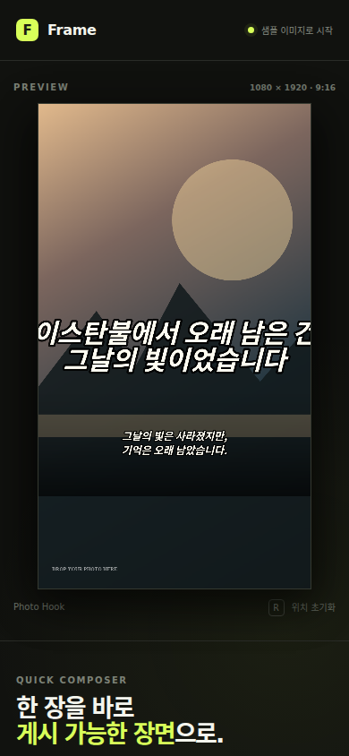
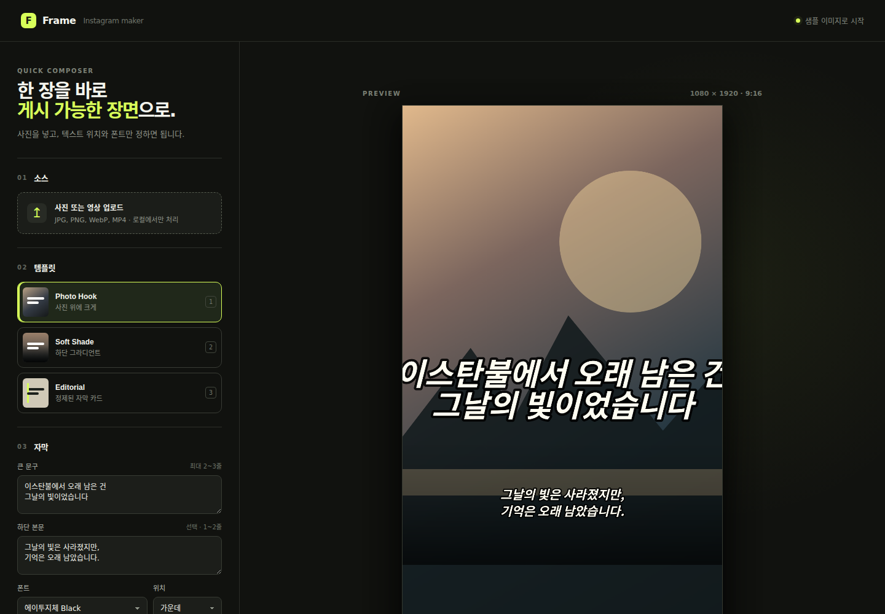

build-17 · 2026-08-07T14:15Z · status: completed
정본은 ./styles.css를 로드하고 CSS는 ./fonts/*를 참조한다. 배포 정적 디렉터리의 자산 경로를 함께 확인하고, 모바일을 막던 body min-width:980px를 제거했다.
CSS의 반응형 분기를 추가해 800px 이하에서 workspace를 단일 열로 전환하고 preview를 viewport 폭에 맞췄다. Chromium 실제 렌더에서 모바일 390×844, 데스크톱 1440×1000을 확인했다.
red_status: passnode --check app.js 통과

Infinity commit/push와 Knowledge Lab parent pointer push는 이 report 작성 후 확인해 기록한다.